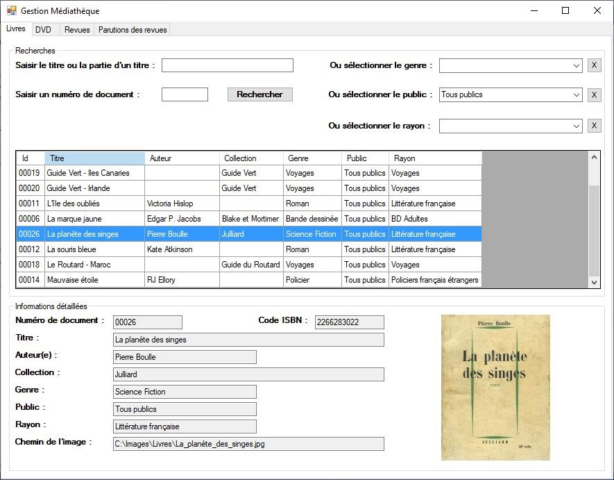

Corriger et faire évoluer une application web (Symfony) exploitant une base de données relationnelle MySQL et qui met à disposition des vidéos d'auto-formation en ligne proposées par MediaTek86 (contexte détaillé présenté ci-après).
Corriger et faire évoluer une application web (Symfony) exploitant une base de données relationnelle MySQL et qui met à disposition des vidéos d'auto-formation en ligne proposées par MediaTek86 (contexte détaillé présenté ci-après).
© 2024 | Ozgur BARKAY